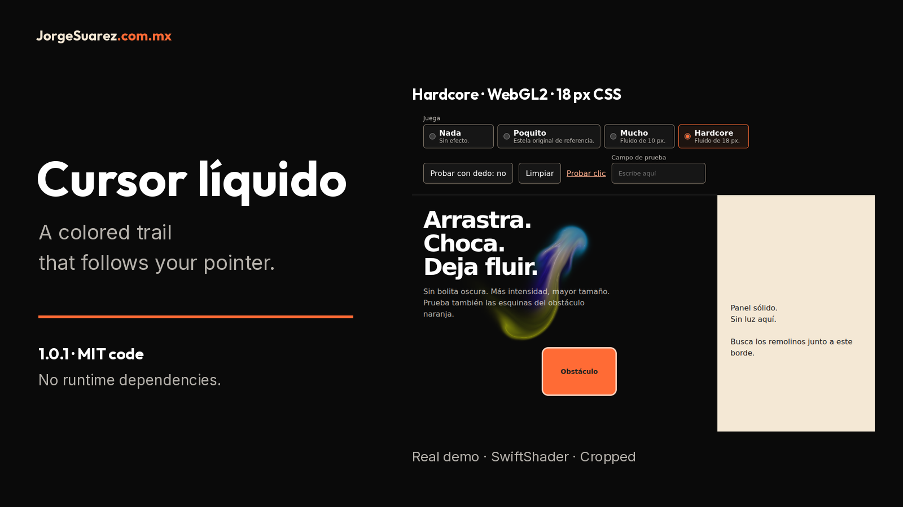

Move the mouse. Watch the trail.
Four intensities for a web page. This is the real engine, not a fabricated interface.
13.04 s · No audio · Choose ES/EN captions in the video CC menu.
Watch the cursor in action
English · Español · Back
Captioned player · Original MP4 · English VTT
What to look for
| Time |
Visual explanation |
| 00:00-00:03 |
The demo shows four levels; Hardcore is selected. The dark area makes the trail visible. |
| 00:03-00:06 |
The pointer travels across the dark area. A multicolored fluid trail is visible. |
| 00:06-00:09 |
Look at the orange obstacle and light panel boundary. These are solid surfaces in this demonstration. |
| 00:09-00:13.04 |
The recording ends with Mucho selected, the smaller-radius fluid level. Open the local demo to compare for yourself. |
These are editorial explanations, not speech transcription. The original video has no audio track. Both players retain the Spanish UI; English translates explanations rather than inventing a new interface. Nada means off; Poquito means dots; Mucho and Hardcore are 10 and 18 CSS px fluid.
Provenance and limits
cursor-liquido-restaurado-real.mp4, cursor-liquido-demo.gif and the four *-real.png screenshots are reused byte-for-byte from this repository's baseline. The original capture declared headless Chromium, SwiftShader software WebGL, a 1000 × 850 viewport and Playwright mouse input on the approved demo. Local 1.0.1 retains the same engine and adapter; the recording represents appearance, not proof of the new adaptive-quality fix. That fix has separate tests.
The MP4 lasts 13.04 s, H.264, 1000 × 850. No video edits or UI pixel replacement. The player adds two selectable VTT tracks and readable text outside the video. The GIF keeps its original animation. The desktop cover crops hardcore-real.png; the mobile cover scales the full screenshot.
Original regression screenshots paused animation after real input so PNG encoding would not erase the idle trail. They do not measure FPS or certify GPUs or physical phones. The demo contains no personal data.